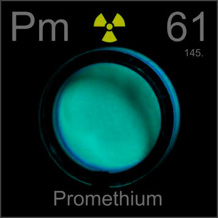

HOME
PREVIOUS
NEXT

Promethium
Atomic Weight: 145
Density: 7.264 g/cm3
Melting Point: 1100 °C
Boiling Point: 3000 °C
Naturally radioactive promethium was briefly used as a replacement for radium in self-luminous paint, before tritium took over. This button was produced using left-over stock kept for making diving watches.